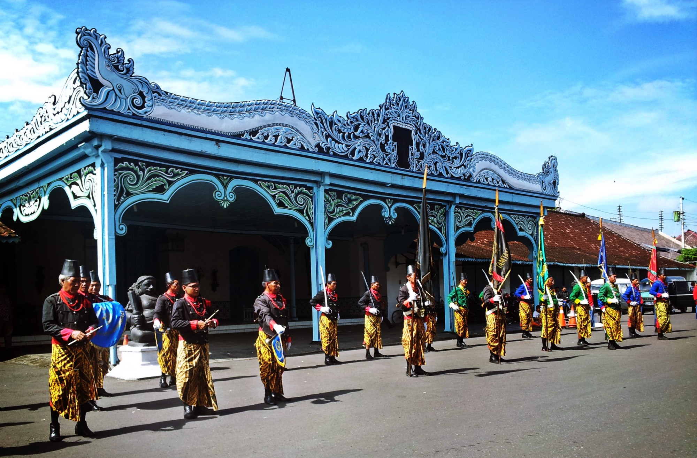
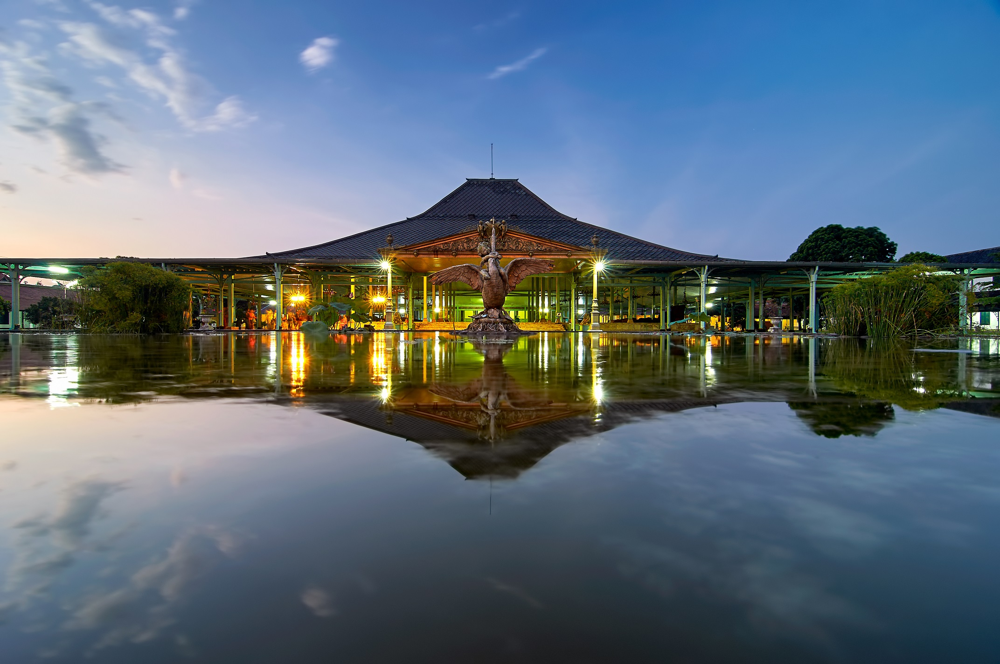
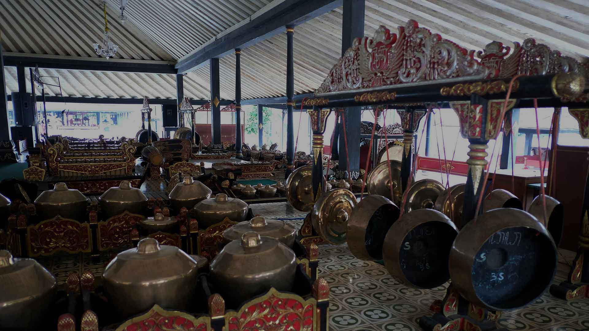
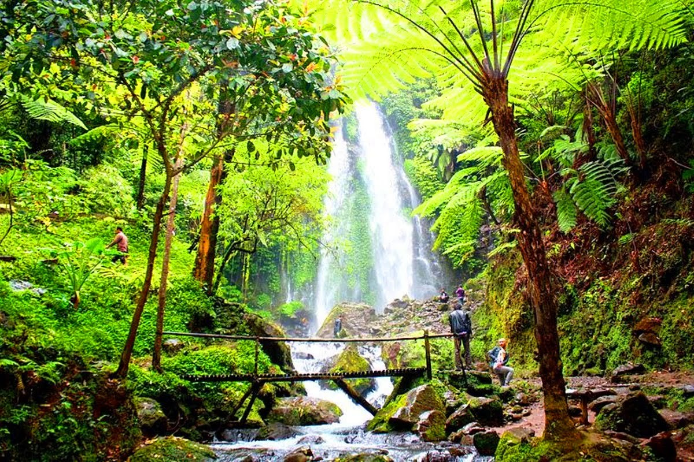
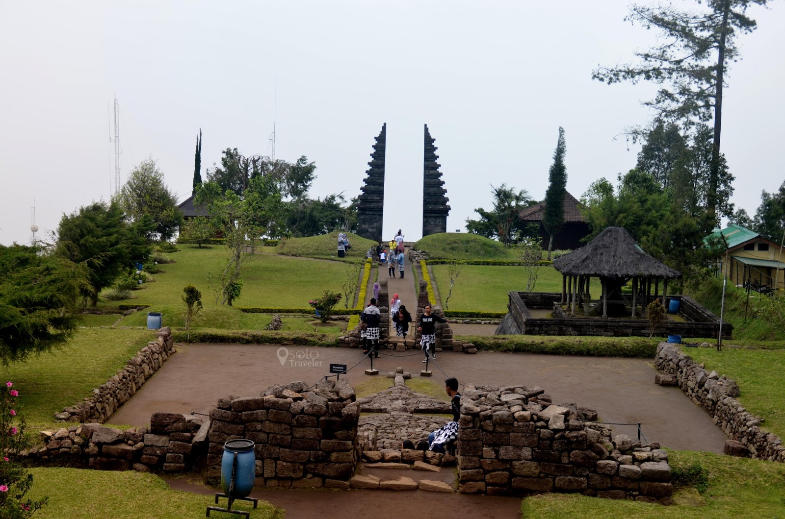
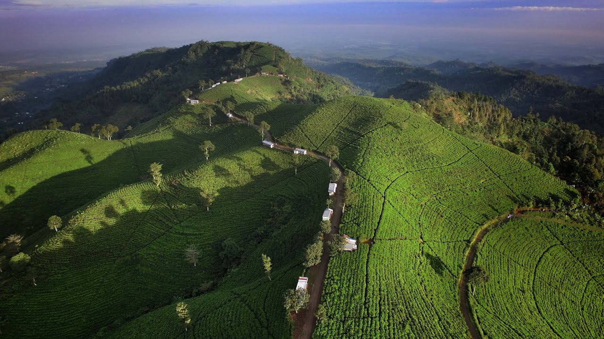

Sejarah

Eksistensi kota ini dimulai di saat Sunan Pakubuwana II, raja Kesultanan Mataram, memindahkan kedudukan raja dari Kartasura ke Desa Sala, sebuah desa yang tidak jauh
dari tepi Bengawan Solo, karena istana Kartasura hancur akibat serbuan pemberontak. Sunan Pakubuwana II membeli tanah dari lurah Desa Sala, yaitu Kyai Sala, sebesar 10.000 ringgit (gulden Belanda) untuk membangun istana Mataram yang baru. Secara
resmi, istana Mataram yang baru dinamakan Keraton Surakarta Hadiningrat dan mulai ditempati tanggal 20 Februari 1745.
Status Sunan Surakarta dan Adipati Mangkunegaran menjadi simbol budaya di tengah masyarakat serta kedudukan keraton dan pura diubah menjadi pusat pengembangan seni dan budaya Jawa. Kemudian Surakarta ditetapkan menjadi tempat kedudukan dari residen, yang memimpin Karesidenan Surakarta dengan wilayah seluas 5.677 km². Karesidenan Surakarta terdiri dari daerah-daerah Kota Praja Surakarta, Kabupaten Karanganyar, Kabupaten Sragen, Kabupaten Wonogiri, Kabupaten Sukoharjo, Kabupaten Klaten, Kabupaten Boyolali. Tanggal 16 Juni 1946 diperingati sebagai hari jadi Pemerintah Kota Surakarta moderen.
Geografis

Kota Surakarta terletak di antara 110 45` 15" - 110 45` 35" Bujur Timur dan 70` 36" - 70` 56" Lintang Selatan dan berbatasan dengan Kabupaten Karanganyar dan Kabupaten Boyolali di sebelah utara, Kabupaten Karanganyar dan Kabupaten Sukoharjo di sebelah timur dan barat, dan Kabupaten Sukoharjo di sebelah selatan.
Di masing-masing batas kota terdapat Gapura Kasunanan yang didirikan sekitar tahun 1931–1932 pada masa pemerintahan Sunan Pakubuwana X di Kasunanan Surakarta.
Gapura Kasunanan didirikan sebagai pembatas sekaligus pintu gerbang masuk ibu kota kerajaan (Kota Surakarta) dengan wilayah sekitar. Gapura Kasunanan tidak hanya didirikan di jalan penghubung, namun juga didirikan di pinggir sungai Bengawan Solo yang pada waktu itu menjadi dermaga dan tempat penyeberangan (di Mojo/Silir).
Budaya

Surakarta dikenal sebagai salah satu inti kebudayaan Jawa karena secara tradisional merupakan salah satu pusat politik dan pengembangan tradisi Jawa. Kemakmuran wilayah ini sejak abad ke-19 mendorong berkembangnya berbagai literatur berbahasa Jawa, tarian, seni boga, busana, arsitektur, dan bermacam-macam ekspresi budaya lainnya.
Orang mengetahui adanya "persaingan" kultural antara Surakarta dan Yogyakarta, sehingga melahirkan apa yang dikenal sebagai "Gaya Surakarta" dan "Gaya Yogyakarta" di bidang busana, gerak tarian, seni tatah kulit (wayang), pengolahan batik, gamelan, dan sebagainya.
Wisata
Wisata-wisata alam di sekitar Surakarta antara lain Kawasan Wisata Tawangmangu (berada di Kabupaten Karanganyar), Kawasan Wisata Selo (berada di Kabupaten Boyolali), Agrowisata Kebun Teh Kemuning, Air Terjun Jumog, Air Terjun Parang Ijo, Air Terjun Segoro Gunung, Grojogan Sewu, dan lain-lain. Selain itu di Kabupaten Karanganyar,
tepatnya di lereng Gunung Lawu, terdapat beberapa candi peninggalan kebudayaan Hindu-Buddha, seperti Candi Sukuh, Candi Cetho, Candi Monyet, dan lain-lain.
Grojogan Sewu

Grojogan Sewu merupakan salah satu air terjun yang berada di Provinsi Jawa Tengah. Terletak di Kecamatan Tawangmangu,
Kabupaten Karanganyar, Jawa Tengah. Air terjun Grojogan Sewu terletak di lereng Gunung Lawu. Grojogan Sewu terletak sekitar 27 km di sebelah timur Kota Karanganyar. Air terjun Grojogan Sewu merupakan bagian dari Hutan Wisata Grojogan Sewu.
Candi Cetho

Candi Ceto (ejaan bahasa Jawa latin: cethå) merupakan candi bercorak agama Hindu yang diduga kuat dibangun pada masa-masa akhir era Majapahit (abad ke-15 Masehi). Lokasi candi berada di lereng Gunung Lawu pada ketinggian 1496 m di atas permukaan laut,
dan secara administratif berada di Dusun Ceto, Desa Gumeng, Kecamatan Jenawi, Kabupaten Karanganyar.
Kebun Teh Kemuning

Perkebunan Teh Kemuning berada di Ngargoyoso, Karanganyar, Jawa Tengah atau sekitar 10 kilometer timur laut dari jalur utama Solo-Tawangmangu. Perkebunan teh ini merupakan salah satu tujuan wisata di Jawa Tengah yang berada di kabupaten karanganyar. Pesona alam pegunungannya masih asri, Udara sejuk dengan suhu rata-rata 21,5 derajat celcius. Lokasi tepat perkebunan ini ada di 11,10-11,250 BT dan 7,40-7,60 LS.
Ketinggian tempatnya bervariasi antara 800 hingga 1.540 meter di atas permukaan laut dengen kelembaban berkisar 60 – 80 persen dengan penyinaran matahari hanya 40 – 55 persen.